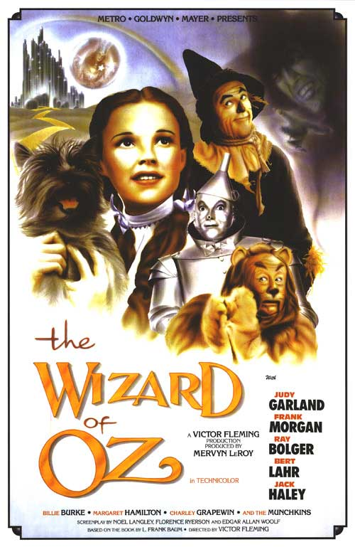

Film Summary

Based on a popular book of the same name, The Wizard of Oz is about a young girl, named Dorothy, and her dog,Toto. They are swept away in a cyclone from the dark and dreary Kansas prairie and into the beautiful technicolor land of Oz. Upon her arrival she kills the Wicked Witch of the East, angering the Wicked Witch of the West. She begins a magical journey to the Emerald City to ask the Wizard of Oz for his help in returning to Kansas. On her way she befriends a Scarecrow, who wants a brain, a Tinman, who wants a heart, and a Lion, who wants courage. After meeting with the Wizard, he tells her she must kill the Wicked Witch of the West before he will grant their requests. Dorothy melts the witch to kill her and they return only to discover that the wizard is not, in fact, a wizard but was a circus performer from Nebraska. He helps the others realize they have gifts of their own and he offers to take Dorothy back with him. However, Dorothy misses the balloon home, but she discovers that she had the power to go home all the time and just needed to learn, "there is no place like home."
Cast
- Judy Garland as Dorothy Gale
- Frank Morgan as Professor Marvel/The Wizard/Doorman/Cabbie/Guard
- Ray Bolger as Hunk/Scarecrow
- Jack Haley as Hickory/Tin Man
- Bert Lahr as Zeke/Cowardly Lion
- Terry as Toto
- Margaret Hamilton as Miss Almira Gulch/The Wicked Witch of the West
Judy Garland Biography

Judy Garland was born Frances Ethel Gumm on June 10, 1922 in Minnesota. She was a famous actress, singer, and vaudevillian with a career which spanned 40 years. After appearing in vaudeville with her two older sisters, Garland was signed to Metro-Goldwyn-Mayer as a teenager and made more than two dozen films there, including nine with Mickey Rooney, and one of her most famous roles, The Wizard of Oz . Later, after leaving MGM, she gained success with record-breaking concert appearances and a return to acting. However, she struggled in her personal life from a young age when film executives would belittle her self-image by saying she was unattractive and would constantly manipulate her onscreen physical appearance. She was plagued by financial instability, often owing hundreds of thousands of dollars in back taxes. She married five times, with her first four marriages ending in divorce. She also had a long battle with drugs and alcohol, which ultimately led to her death at the age of 47 from an overdose. She received many awards, both while alive and after her death, including a Juvenile Academy Award, a Golden Globe Award, Grammy Awards, a Special Tony Award, and was the youngest recipient of the Cecil B. DeMille Lifetime Achievement Award at age 39. She was nominated for the Academy Award for Best Actress for her role in A Star Is Born and for Best Supporting Actress for her performance in Judgment at Nuremberg. In 1997, she was posthumously awarded a Grammy Lifetime Achievement Award. Several of her recordings have also been inducted into the Grammy Hall of Fame. In 1999, the American Film Institute placed her among the ten greatest female stars in the history of American cinema. She still remains a popular figure in American popular culture today.